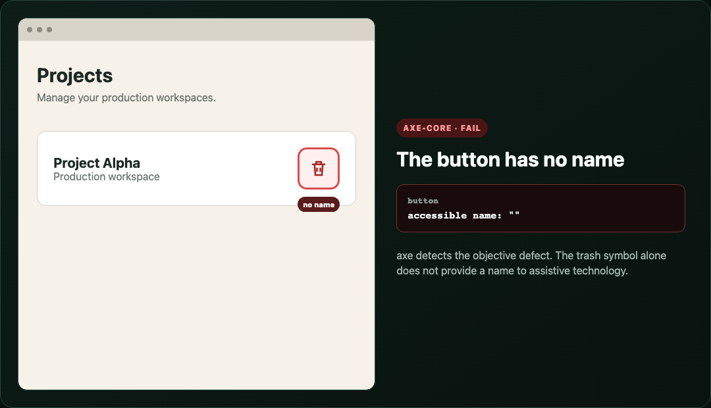
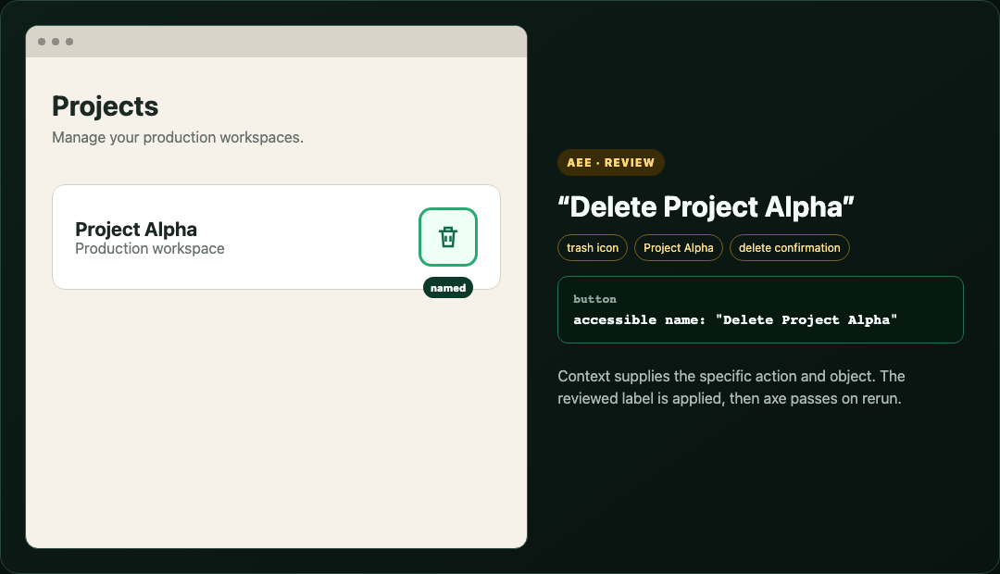

Experimental open-source developer tool
AEE combines deterministic checks with review-only contextual analysis, then preserves the before-and-after evidence needed to verify a fix.
AEE is a public preview, not a complete WCAG scanner or accessibility certification.
Example AEE report summary
This main page starts with the fixes in place. Activate a deliberate issue, test this same URL, then reset and compare the evidence.
Baseline: no intentional issues enabled.
The selected issues stay in the URL for repeatable runs. Nothing is saved between visits to the clean URL. A passing automated check does not certify full accessibility.
One interaction, evidence from every lane
A deterministic orchestrator runs the same scenario through focused evidence workers. AI is optional and receives only questions that require contextual judgment.

This is the target evidence architecture. Colors distinguish deterministic or available work from optional, contextual, or planned integrations. Read the artifact contract and Mermaid source on GitHub.
Deterministic first, AI by exception
This table is generated from the versioned JSON registry. “Partial” and “Planned” describe implementation status, not accessibility conformance.
| Issue and mapping | Deterministic detection | AI contribution | Verification |
|---|---|---|---|
| Missing or unsuitable accessible name Partial WCAG 4.1.2, axe-core button-name, axe-core link-name, axe-core label |
|
AI-assistedSuggest a concise, context-specific name when deterministic checks can prove a name problem but cannot author the wording. |
|
| Image purpose and text alternative Planned WCAG 1.1.1, axe-core image-alt |
|
AI-assistedClassify an image as decorative, informative, functional, or complex and draft text only when page context is required. |
|
| Visual and semantic heading structure Partial WCAG 1.3.1, axe-core empty-heading |
|
AI-assistedCompare the full visual hierarchy with the full DOM and accessibility-tree outline when the intended relationships require contextual judgment. |
|
| Text and component color contrast Partial WCAG 1.4.3, WCAG 1.4.11 |
|
AI-assistedLocate complex rendered foreground and background regions or explain brand intent when deterministic extraction is inconclusive. |
|
| Keyboard operation and activation Partial WCAG 2.1.1 |
|
Deterministic onlyKeyboard operability and focus movement are verified from recorded behavior, not inferred by AI. |
|
| Hover and keyboard-focus equivalence Planned WCAG 1.4.13 |
|
Deterministic onlyEquivalent behavior is decided from traces and outcomes; AI does not substitute for exercising both paths. |
|
| Focus management after interface changes Partial WCAG 2.4.3, WCAG 4.1.3 |
|
Deterministic onlyFocus movement and announcements are observable state. AI may explain evidence later but cannot decide or cause the movement. |
|
Six focused examples
Choose an example and compare the two images. Nothing advances automatically, so you control where to focus.
Example 1
aria-label="Delete Project Alpha"Example 2
h2 and its three sections h3s.Example 3
Example 4
Text subtle #91aaa2, measured at 7.73:1.Example 5
Example 6
Trust requires boundaries
Apache 2.0 · Open source